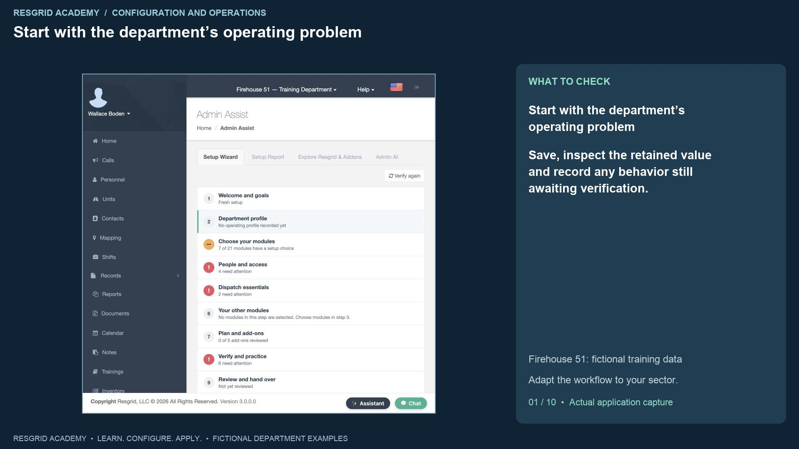
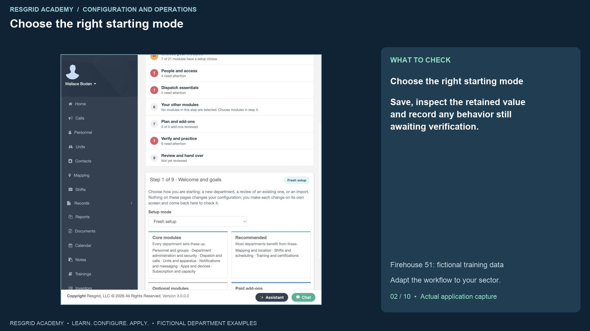
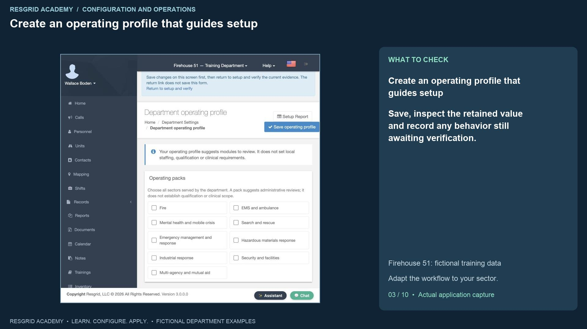
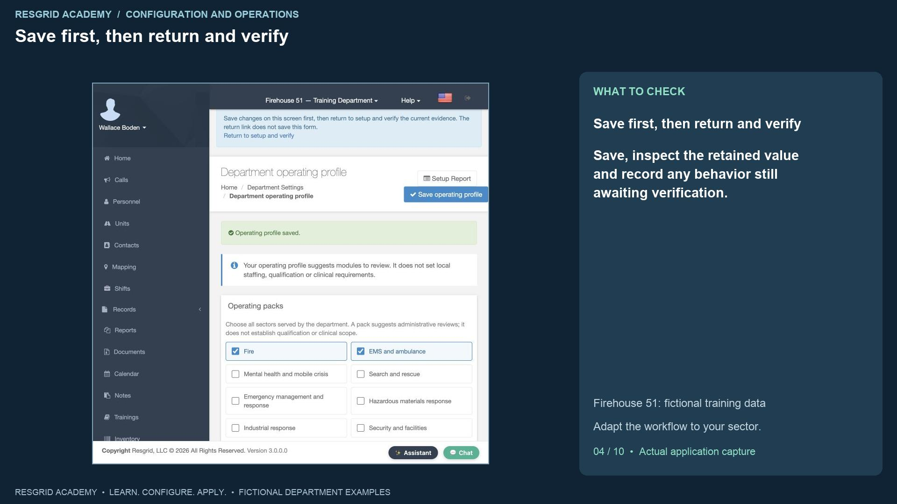
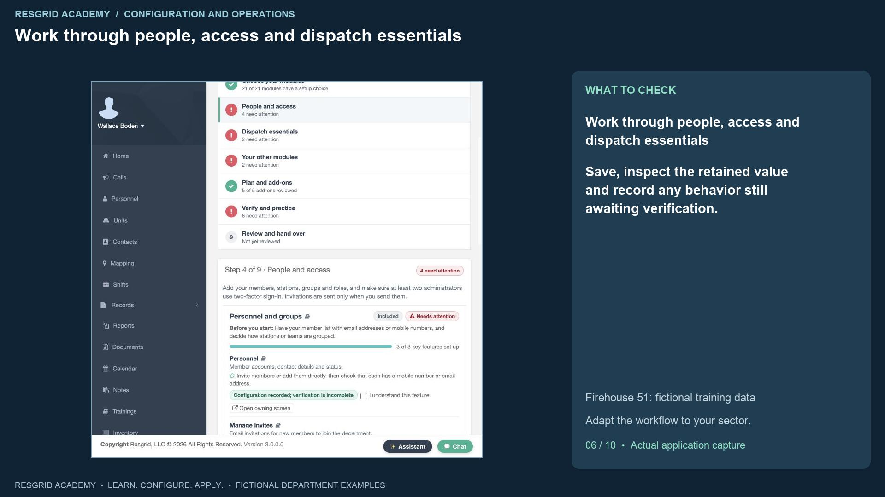
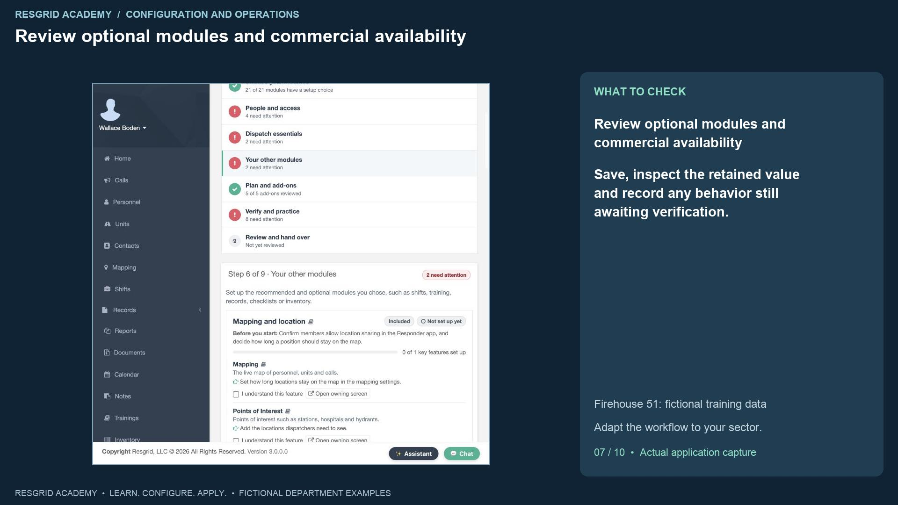
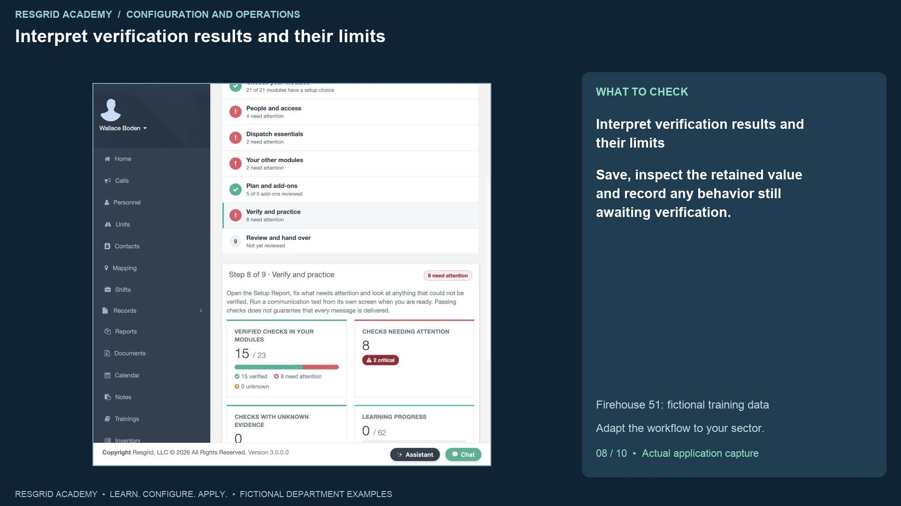
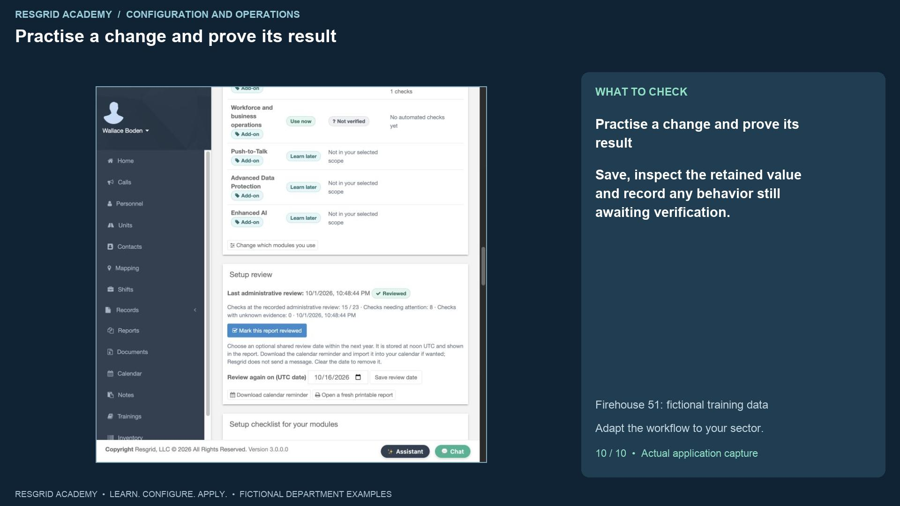

Configuration walkthrough
Set up a department with the nine-step wizard
Follow each step, understand its impact, and try the practice exercise with your department.
Step 1
Start with the department’s operating problem

Read the transcript
A department can have members, apparatus and incidents in Resgrid and still have important setup gaps. The Setup Wizard gives the administrator a repeatable way to identify those gaps, choose the modules the department will use, and return to the right configuration screen. We are signed in as Wallace Boden in the fictional Firehouse fifty-one training department. Open Start or resume setup from the dashboard. The nine steps organize the work from department context through review and handover. The journey already shows findings needing attention; we will keep those findings visible while we configure the department. Resgrid also supports resource and logistics workflows for community paramedicine and mental health response, search and rescue, security operations, wildland contractors, and industrial emergency response teams. The Chicago Fire names make this dataset recognizable; they do not limit the system to fire and EMS.
Step 2
Choose the right starting mode

Read the transcript
Begin with Welcome and goals. Fresh setup is for a new department. Review existing setup is for an established department that wants to check its current configuration. Import or migration records that you are bringing information from another system; it does not perform an import for you. The page groups features into core, recommended, optional, and paid add-on modules. Learning about a feature does not purchase it, activate a provider, send a message, or change operational configuration. Every operational change happens on its own screen, and you return to the wizard to verify the evidence.
Step 3
Create an operating profile that guides setup

Read the transcript
Step two asks for department context. Open Department operating profile. Select the sectors the department serves; our example chooses Fire, and EMS and ambulance. Choose Career for workforce mix, enter fourteen as the approximate member count, choose Central dispatch, and select twenty-four-hour operation. We also declare mutual aid and choose English, captions and plain language for planning. These are descriptive choices. The member estimate does not replace the actual roster or subscription count. Twenty-four-hour operation does not create shifts. A fire or EMS pack does not establish anyone’s qualifications or clinical scope. The profile helps Resgrid suggest relevant modules to review. A mobile crisis team can choose Mental health and mobile crisis; a search team can choose Search and rescue; security and industrial teams have their own operating packs. A wildland contractor can combine the Fire context with a Contract workforce mix. Choose the context that actually describes your department.
Step 4
Save first, then return and verify

Read the transcript
Click Save operating profile and look for the saved confirmation. Then use Return to setup and verify. That return link does not save an unfinished form. This distinction matters throughout the wizard: opening a screen, changing a value, saving the value, and proving its behavior are separate steps. After returning, the journey shows Operating profile recorded. The department’s time zone comes from Department Settings, which we cover in the next tutorial. References to groups, policies and source systems are also declarations; saving a reference does not prove an external connection or that a policy has been approved.
Step 5
Choose modules and save each choice

Read the transcript
In Choose your modules, use Use now for modules you intend to configure, Learn later for modules you will revisit, or Not applicable with an appropriate reason. Security checks always apply. Our example selects mapping, shifts, training, contacts, records, checklists, inventory, deployments and automation for current setup. Changing the dropdown presents a Save module choice button; click it for that module. We save all twenty-one choices. The count tracks recorded decisions, rather than successful configuration. Choosing Use now brings a module into the wizard and report scope. It does not turn on a hidden feature or grant access to a paid add-on.
Step 6
Work through people, access and dispatch essentials

Read the transcript
People and access links to the roster, stations and groups, roles, and department security. Confirm the actual membership and who has administrative authority before applying dispatch rules. Personnel roles describe operational capabilities; they are different from department or group administrator permissions. Dispatch essentials then links to the call, unit and notification settings that control incident handling. Use the owning-screen links, save there, and return to verify. A feature’s learning checkbox records your own understanding. It is useful for training, but it does not prove that a saved setting has propagated or that an operational test passed.
Step 7
Review optional modules and commercial availability

Read the transcript
Your other modules shows the recommended and optional modules you selected. Follow their prerequisites in order: a stock workspace needs locations and items, a training assignment needs the right participants, and a deployment needs its apparatus and roster. Plan and add-ons separates interest from commercial access. Maintenance and workforce appear active here because the isolated training stack uses a read-only billing fixture with zero charges. We choose Learn later for Push-to-Talk, Advanced Data Protection and Enhanced AI. Those choices do not buy anything or activate outside services. On your department, review the actual plan, permissions, release availability and provider configuration before relying on a module.
Step 8
Interpret verification results and their limits

Read the transcript
Verify and practice opens the Setup Report. Our recorded example has fifteen verified checks out of twenty-three, with eight needing attention and two critical findings. The critical findings concern administrator multi-factor authentication. Other findings include notification preferences, communication verification, an empty group, password-reset policy, overlapping shifts and expiring qualifications. Read each finding and use its owning-screen link. Unknown evidence is not a pass. Apps and devices, deployments, and workforce have no automated checks in this report, so they still require your own review. Passing configuration checks never guarantees message delivery; a communication test needs its own recipient and channel review.
Step 9
Schedule a review and record the handover

Read the transcript
Step nine records administrative review and follow-up. We choose October sixteenth, twenty twenty-six, as the shared review date and click Save review date. The date is stored at noon U T C. A calendar reminder can be downloaded and imported into a calendar; saving the date does not send a message. After reading the report, we mark this report reviewed. The page records the review and its evidence snapshot, while the eight findings still need attention. Reviewed means the administrator has reviewed the report. It does not make those findings pass or establish operational readiness. Use the fresh printable report when handing work to another officer.
Step 10
Practise a change and prove its result

Read the transcript
For your practice exercise, record the operating profile, make one module choice, and follow one finding to its owning screen. Save a deliberate change, return, and select Verify again. Compare the current finding with the earlier evidence and assign the next action to a responsible person. Keep outside systems and modules without automated checks on the review list. This workflow solves a common department problem: configuration decisions are spread across many screens and their consequences can be forgotten. The wizard provides a consistent journey, while the report keeps saved configuration, personal learning, current evidence and administrative review understandable. Adapt the same exercise to a community response team reviewing scheduled visits, a search team reviewing deployment availability, a security company reviewing site coverage, a wildland contractor reviewing seasonal crews, or an industrial team reviewing facility readiness. The software setup journey is shared; each organization supplies its own procedures and responsible reviewers.
Apply it to your department
- Community paramedicine and mental health response
- Choose the appropriate EMS or mobile-crisis operating pack and review visit coverage and notification setup.
- Search and rescue
- Choose Search and rescue, then review mapping, training, inventory and deployments.
- Security companies and departments
- Choose Security and facilities, then review site groups, patrol staffing and activity records.
- Wildland contractors
- Use the Fire context with Contract workforce mix; review seasonal crews and deployment dates.
- Industrial emergency response teams
- Choose Industrial response and applicable HazMat context; review facility groups, equipment and qualifications.
Put it into practice
Check your department’s enabled modules, permissions and provider configuration. Save each change on its own screen, review the retained value, and confirm the result with the people and devices that will use it.